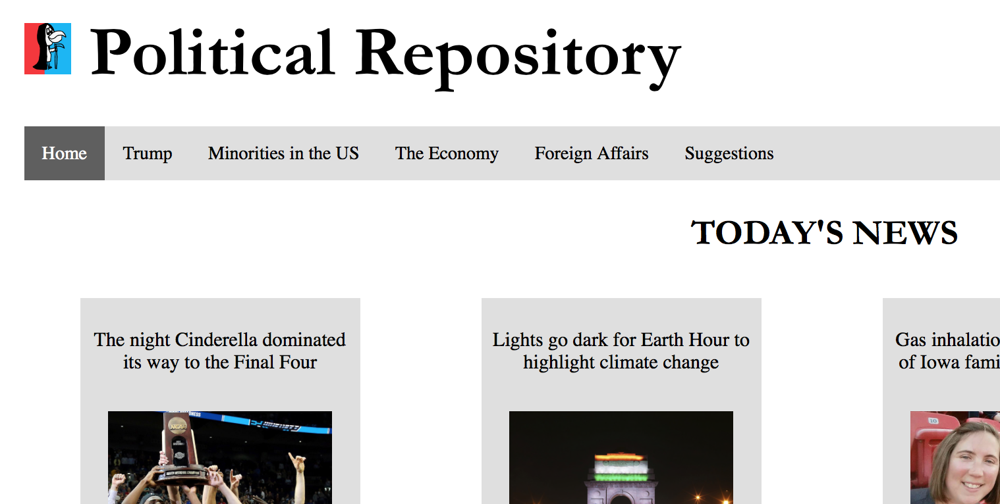
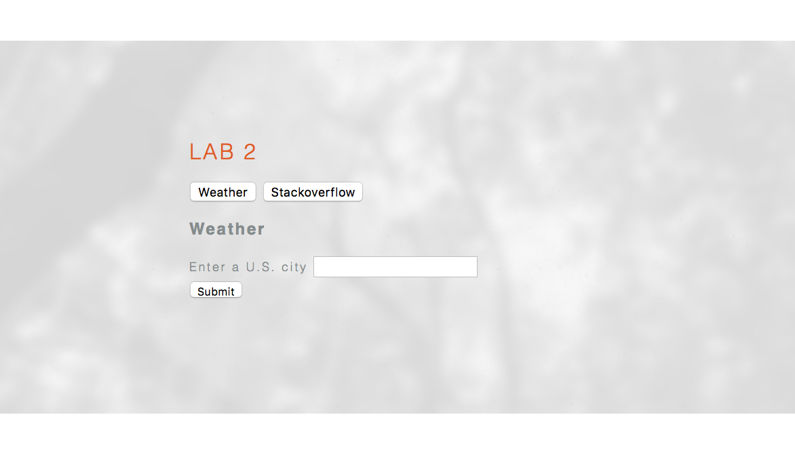
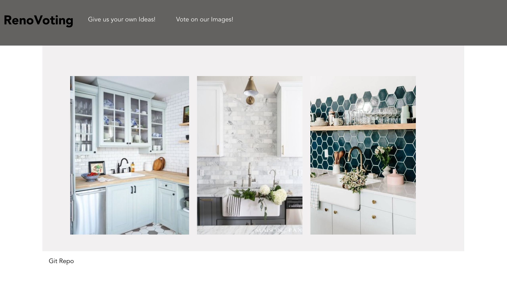
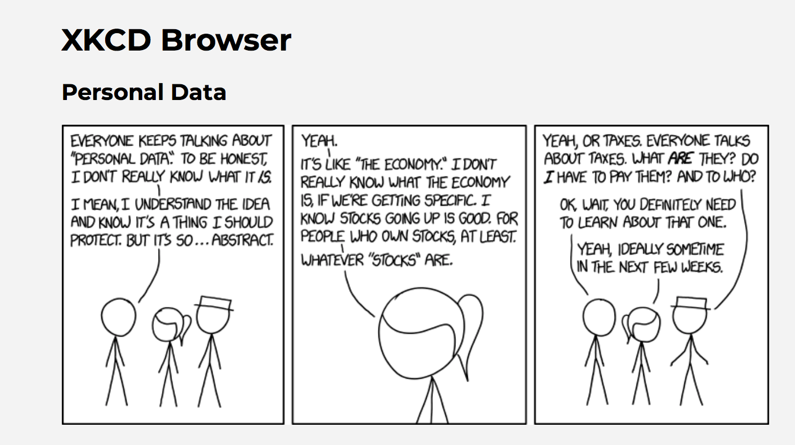

Web Development Work Samples
PoliRepo
PoliRepo was a coordinated project I developed with a friend to explore our skills. Over several weeks and we used javascript, CSS, & HTML to help PoliRepo come to life. We implemented APIs, tabs, flexboxes, and other important aspects of making a webpage layout.
Check it out on my github here.
Lab 2
This project was my first experience referencing APIs and using them to provide feedback on a webpage
Check it out on my github here.
Renovoting
Renovoting was another coordinated project with my developer friend. We implemented a node server to store data and allow the user's interactions with the website to be recorded. I completed all of the styling for this page.
Check it out on my friend's github here.
Lab 3
For this project, I used Vue to build an application that uses an API to browse XKCD comics.
Leanne Rickords Photography
In this project, I organized images for a photographer's website. I also implemented the use of a navigation bar. The images can be seen under the portfolio tab.